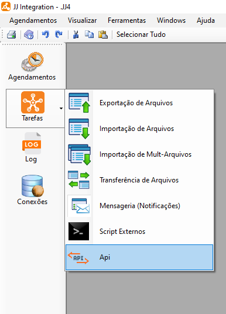
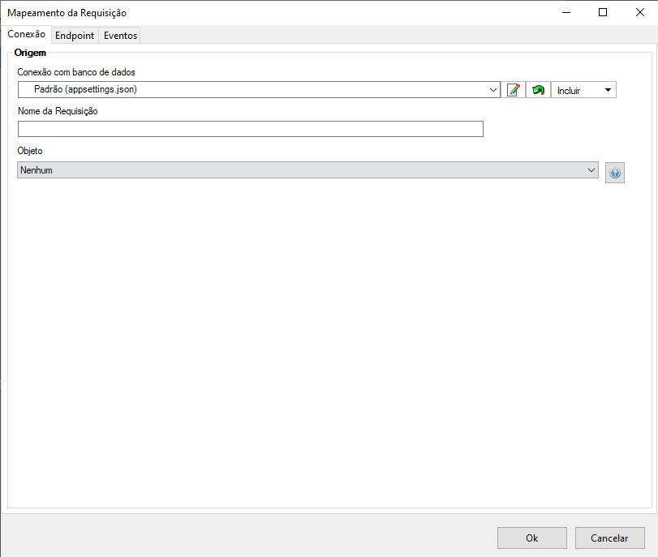
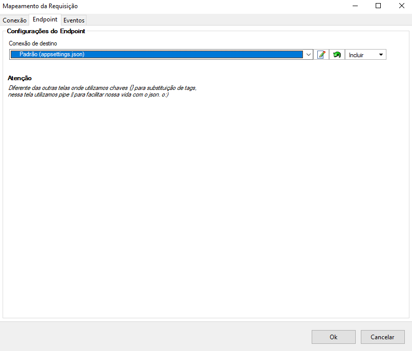
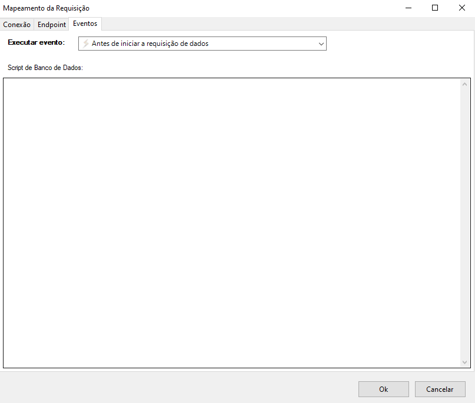
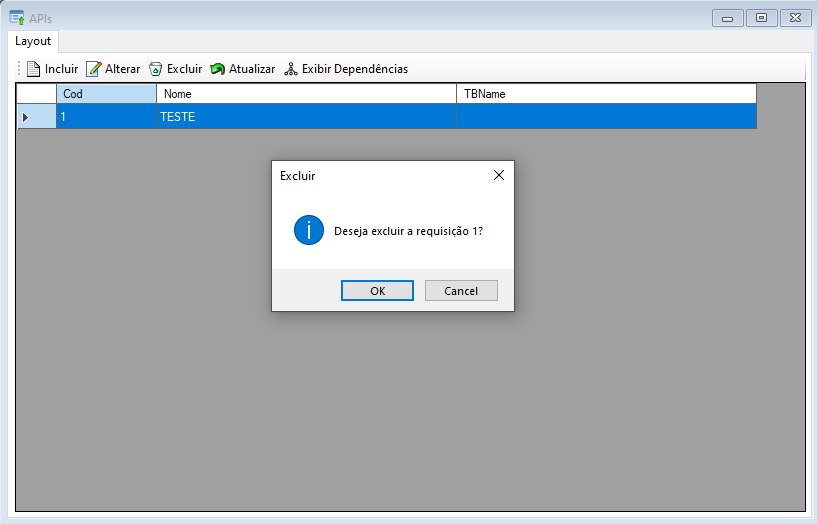

API
API é uma função onde pode-se incluir, alterar, excluir, atualizar e exibir dependências.
Esta seção pode ser acessada pelo menu lateral em Tarefas.

API
- Ao selecionar esta opção o sistema ira exibir uma tela onde poderá incluir, alterar, excluir, atualizar e exibir dependências.

Para realizar um novo mapeamento da requisição selecione o botão Incluir
 .
.Ao selecionar o sistema irá exibir uma nova tela para configuração do arquivo de saída separada em três partes: Conexão, EndPoint e Eventos. Após preencher todos os dados necessários selecione o botão "Ok" para finalizar e salvar o novo mapeamento.
Na aba "Conexão" preencha a origem, inserindo o nome da requisição e objeto desejado.

- Na aba "Endpoint" insira a conexão de destino com o JSON selecionado.

- Na aba "Eventos" selecione o evento que deseja executar e preencha o campo Script com o script de banco de dados necessário para execução.

Tip
Você poderá utilizar as seguintes variavéis:
- |responsecode| retorna o status da chamada da api
- |responsebody| corpo de resposta de uma chamada http
- Ou qualquer campo da query separados por pipe
Selecione o botão Alterar  para editar um mapeamento de requisição. Ao selecionar o sistema irá exibir uma tela com detalhes onde terá três abas de configuração sendo elas: conexão, endpoint e eventos, ao finalizar as alterações selecione o botão "Ok" para salvar e alterar o mapeamento.
para editar um mapeamento de requisição. Ao selecionar o sistema irá exibir uma tela com detalhes onde terá três abas de configuração sendo elas: conexão, endpoint e eventos, ao finalizar as alterações selecione o botão "Ok" para salvar e alterar o mapeamento.
- Na aba "Conexão" altere a origem, inserindo o nome da requisição e objeto desejado.
- Na aba "Endpoint" altere a conexão de destino com o JSON selecionado.
- Na aba "Eventos" altere o evento que deseja executar e preencha o campo Script com o script de banco de dados necessário para execução.
Para excluir um arquivo selecione o arquivo desejado e após selecione o botão Excluir  , após selecionar o sistema irá exibir uma mensagem de confirmação, selecione botão "Ok" para confirmar e excluir.
, após selecionar o sistema irá exibir uma mensagem de confirmação, selecione botão "Ok" para confirmar e excluir.

Para atualizar a lista de Arquivos selecione o botão Atualizar  , após selecionar o sistema irá atualizar a lista sendo possível dar continuidade nas atividades normalmente.
, após selecionar o sistema irá atualizar a lista sendo possível dar continuidade nas atividades normalmente.
Para exibir dependencias da tarefa selecionada, selecione o botão Exibir Dependências  , após selecionar o sistema irá exibir a lista de dependências da tarefa caso exista alguma.
, após selecionar o sistema irá exibir a lista de dependências da tarefa caso exista alguma.